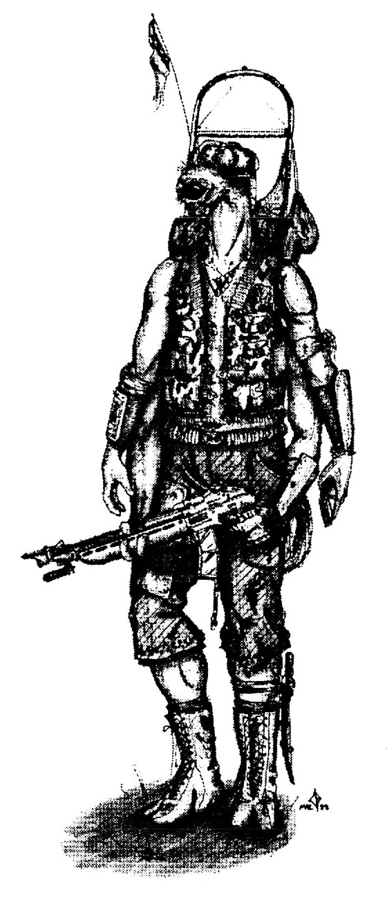
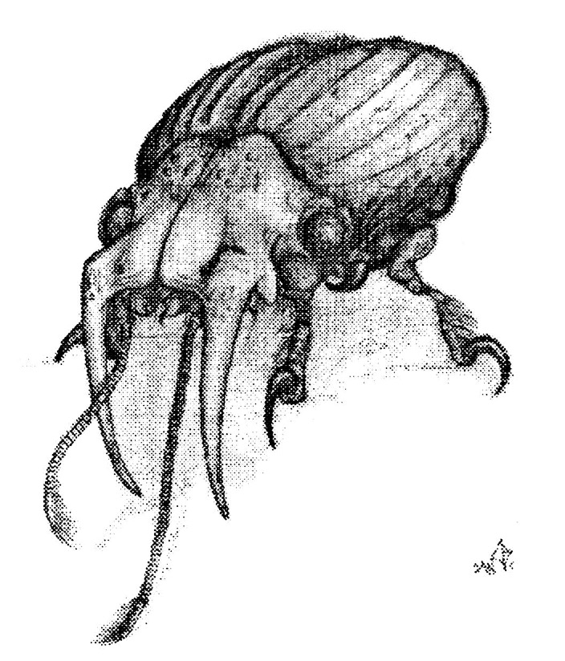
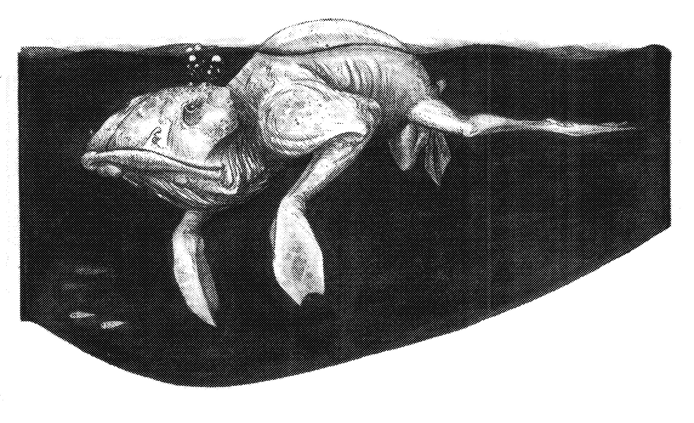

Movement & Encumbrance
Most players outfit their characters with "everything they need to begin adventuring". Translation: a fusion rifle, two pistols, a dozen grenades, and various hand to hand weapons, the clothes on their back and a spare set (including underwear for those particular players), several kits to repair and service weapons and equipment, the proverbial flashlight, miscellaneous extras, and a pack to carry it all - in short everything and the sonic sink. So when they drape ammunition on top of it all their characters not only look ridiculous they are impossibly encumbered and probably shouldn't be able to stand, let alone adventure! To prevent this - a dose of common sense is usually necessary, either from the GM's store of practical jokes to play on ladened characters or from an encumbrance system. Both of which will bring the player back to reality - in a game sense - and make them think about the load they want their poor character to carry. Nothing spells novice more than a character struggling under the weight of a two meter pack with all manner of pots, pans and miscellaneous junk hanging from it.
Encumbrance - the amount to which a person is burdened or impeded - means more than simply the weight a character is carrying. Encumbrance includes the way a person performs while encumbered. The encumbrance system includes guidelines for how much can be carried for how long (including deadlifts) and how this affects the character in performing other tasks.
Distance, Time, and Velocity
All simple motions, such as moving while encumbered, are governed by Newtonian motion equations, the simplest of which is D = VT. Where D is the distance traveled, V is the velocity of the object, and T is the time for which that object moves at the given velocity. This simple equation can yield information on all the motion that will ever occur in encumbrance, because it can be re-written as: T = D/V and V = D/T and the original D = VT You can see by knowing any two of the three terms (D, V, or T) it is possible to calculate the third. So, deriving information the character wants is a simple matter of plugging in numbers into one or the other of the above equations. The numbers for velocity and time come directly from the tables, while the values for Distance is the product of the Velocity and Time. Perhaps the best way to get the feel for the system is to go through a few examples.
Performance and Efficiency
Imagine a character walking continuously through a forest who is confronted by a large grizzly bear. Logically, you would not expect him to be at peak performance. This is what is meant by performance and efficiency. The efficiency of a character at performing skill or attribute checks while encumbered is easy to determine. While the character stays within the limit of hours or weight that can be carried, as specified by the endurance and encumbrance system, the character functions at 100 percent efficiency. If that limit is exceeded however, their efficiency decreases, directly with how much more or how much longer it is carried. If the character carries a load for twice as long his efficiency will be cut by two or ½ of their normal values (the same applies if he were to carry twice the weight for the same time). If twice the weight was carried for twice as long then the efficiency would be cut buy 4 or ¼ of normal values. So if the efficiency was ½ then you would use ½ the characters' attribute score or ½ of the skill aptitude plus experience.

Wounds and Healing
Healing is the most basic functions of any living organism after being damaged. The characters living, working and adventuring also heal their wounds and recover from grave injuries, as anything living does. The modifiers for healing include ones to account for racial differences, individual variances, damage type, medical treatment received and exposure to the environment. All these modifiers summed up directly influence the length of time a character remains damaged and with reduced abilities. Modifies are listed along with their conditions on Table #3-25.1 as the GM you can choose the accuracy level that you and your players want, by the number of modifiers you use. The maximum accuracy is attained if all of the applicable modifiers are used, while applying only a few would be quick and somewhat realistic. To determine the length of time required to heal any particular damage. Simply add up all of the applicable modifiers that you wish to use, if the result is negative the damage is healed immediately with no ill effects. "Ghost" pains may be felt for a couple of days depending on the severity but this is normal. If the result is positive look up this number on Table #3-25. The process will yield two values separated by a comma, this is the time in days and hours (days,hours) that it takes for the wound to heal under the current circumstances. If you wish to determine the number of points the player gains back every day you can simply take the number of points of damage done and divide it by the number of days. This will give you the points recovered every day, or the percentage of damage healed every day if you use a percentage and then do the division. Then every day that the conditions exist subtract these healed values from the total amount of damage done. If you are working with points - dividing this new number of points (the number after a day of healing) by the total in the undamaged area will give the new percentage of damage in the area. This percentage could then be looked up on the appropriate damage table 3-9 to 3-22 to provide a new and updated description of the damage in the area. If you are using percentages the revised damage percent can be used directly to look up a new description of the injury on Tables #3-8 through #3-15. If a character wants to move about and adventure while recovering from damage, his modified skill percentages must be determined (SEE: Skill Resolution).
Results of extensive damage
Living systems - including the body - are complexes of biochemical pathways and feedback loops with control mechanisms that all interweave to form the whole. These types of systems have a particular balance that is quite flexible, yet delicate. Huge trauma to the system can cause an imbalance resulting in a downward spiral towards death. This spiral is sometimes marked by unconsciousness, shock, and coma. Fortunately modern medical techniques and technology can diagnose most of these asymmetries and give advice for medical care to help the patient hold onto life. When the amount of one-time damage is extreme the system can become unconsciousness, go into shock or even die.
Unconsciousness
For every 1 round a wound is left untreated you should subtract ten percent of the damage points inflicted from the characters constitution. Then the player should roll 1:100sd - trying to beat (roll under) his modified constitution. If the player cannot, his characters will pass out in pain and will stay that way until the player can roll under his constitution. NOTE: even if the player is unconscious he will still loose constitution points until the wound is attended to.
Shock and infection
Shock or infection results when the player cannot roll under their Constitution minus the SHOCK and INFECTION RATINGS. These ratings can be found beside each percentage within brace brackets {#.#:#.#}. The first value is the shock rating, the second is the infection rating. The ratings are additive for each turn, the wound is untreated. So one injury - can cause shock or infection due to the accumulating shock points for that injury. Multiple wounds can also cause shock and infection, because of their additive effects. This occurs as long as a wound is left untreated or as long as their Constitution is depressed (SEE: Healing: Recovering attribute points). When the time that is required to heal the damage is calculated be sure to include the modifier for infected.
Death
Death due to excessive damage occurs when more than one organ system sustains more than 100 percent damage and treatment does not arrive in time. Usually once clinically dead a character can be revived with a 80% chance of success immediately after death with a decrease of 20% per hour the character is left untreated. After the fourth hour is passed there is no chance of revival even with the most sophisticated medical technology. Damage to the brain will result but it to can be repaired in short order.
Recovering Attribute points
Unlike damage points attribute scores are recovered by a direct method, that remains the same for all attributes. Attribute points are recovered at different rates depending on the environmental conditions, as high as 10 percent per day with complete rest and as low as 1 percent in severe environmental conditions.

Categories of Treatment
Untreated
The wound is left alone to heal in any way shape or form it can. Huge scares and infection. Death is a possibility, due to vital fluid loss.
First-aid
Stoppage of bleeding and loss of vital fluids and treatment for shock. No surgery but physical manipulation to set broken bones, dislocations, and sprains. Basic bandaging and wound sterilization techniques throughout healing time. POSSIBLE administering of anti-bacterial + infection drugs. There is no cosmetic treatment of wounds in first-aid, and if first-aid is the only treatment received a good sized scar will usually result.
Minor surgery
This involves anything from removing a shard of glass from a wound or a bullet from an organ surgery to closed heart surgery This definitely includes the administration of drugs and other compounds to facilitate good solid healing. The scars left by wounds treated in this manner are usually a great deal cleaner and less barbaric due to many modern and advanced techniques (see below). They are usually smoother and are substantially less portly in colour. Some cosmetic surgery might be administered.
Major surgery
This area includes fields that were thought in ancient times to delicate to fall under the surgery surgeon's scalpel. Areas like the heart and the nervous system, including the brain. Procedures such as removal of objects, reconnections and nervous tissue grafts to the spinal cord and brain are now routine. Major reconnections of nerves to the limbs and internal organs is easily achieved and with drugs almost totally successful. This precision also extends into the brian. Of course high magnification operating viewers are necessary as well as specialized instruments like high definition scalpels (lasers) and complex maps of the patient's own cerebral circuits. Scaring like that of minor surgery is extremely limited and barely noticeable.
Genetic surgery
This category of treatment is actually involves no surgery at all, since the patient's skin - exoskeleton is never broken by the surgeon. This type of treatment may seem like no medical aid at all but instead of physically cutting a patient the "surgeon" administers pills and injections to initiate, sustain and quicken the natural healing process. The extent to which and the kind of injury that can be healed is unlimited because of the infinite possibilities found in the genetic code and the regeneration abilities of our bodies - if treated correctly. This can extend to the point of re-growth of tissues, organs, or even entire limbs, all with only a few injections or pills.
Aging
Characters like normal people age. When characters age their attributes and skills decrease. Table #2-?? shows the rate of this aging for each race and how all of their attributes are affected with time. It is not necessary to change your character's skills each and every time one attribute changes. It is generally a good rule of thumb to re-write your character each time you move into a new age class. If this is done, your character's attributes will adequately reflect their age.
Skill Resolution & Attribute Checks
One of the most basic qualities of life is its ability to respond to external stimulus. The characters also respond to their environment by getting themselves into situations that require a specific task be performed. Characters accomplish these tasks by using their attributes and their skills. Attribute checks are the fastest and simplest way to confirm that a task can be performed. When a character is facing an environmental attribute check, like balancing on a ledge, simply have the player roll and if the roll is under the attribute the check is successful. If, however, the character is facing another character, the two are arm wrestling, then you have both roll and the one who is the most under their attribute succeeds. The ability that a character has for using a skill depends on the character's general experience and the aptitude for the skill being performed. The relatively inexperienced character will take a longer time, where a highly experienced character would complete the task quickly. The experience in a category shows the person's ability in that general area. So if a character has a high experience in the Technical area you would probably call him Mr. Fix-it but it wouldn't qualify him to repair warp drives. Similarly if a character qualified as a drive repair technician he probably curse and kick his hover bike if it broke- down. So, both the aptitude in a particular skill and the general experience in the skill category interrelate to produce the actual ability to perform a skill. In addition to the skill aptitude and experience the environment and the physical condition of the character will also affect their performance. There are three different ways of determining the character's ability to perform the skill and the time required to do so. The first two methods are for normal skill checks and the last is strictly for the Xeno-disciplines. The Xeno- disciplines require more than just experience and aptitude to be performed correctly so the final method is specialized for them.
Normal Skill Checks
For all skill categories other than Xeno there are two ways of resolving whether a character can perform a skill successfully or not. The first method is simply a 1:100sd roll. The G.M. assigns an adversity modifier to compensate for the difficulty of the situation. The condition of the character and the environmental factors will also affect the character's performance while attempting a skill. The character could be affected if he or she is injured, tired or, under duress. The ability of performing a skill is also influenced by the environment, poor lighting, cold or hanging from the face of a cliff. This adversity modifier is then added to the result of the dice roll. If the dice roll plus modifier exceeds the aptitude of the of the skill which is being attempted then the skill cannot be done. If however the modified dice roll is lower than or equal to the aptitude of the skill, the task is accomplished. In either case, failure or success, the time that was required for attempting the skill must be calculated. The second method of resolution also requires that a adversity modifier be assigned. But in this second procedure the aptitude of the attempted skill and category experience are added together and the value looked up on Table #2-?? and cross referenced with the total adversity modifier. Finally, roll 1:100sd and if the roll is larger than the number which resulted from the table the attempt is unsuccessful. If the roll is equal than or less than the number found on Table #2-?? the attempt is successful. In either case the time required to attempt the skill should be calculated.
Xeno-disciplines - a special case
These skills differ from other categories and therefore the method for resolving the success or failure of these skills is different. The adversity modifier in Xeno-disciplines is additionally modified by the number of power points that the user has and the number that it to be used. Once you have added-up all of the adversity modifiers that apply you can use the same table as regular skill resolution. Again the player must role under the number produced from the table for the result to be successful. Xeno-disciplines because of their special nature also require that a second 1:100sd roll be done. This checks the character's focus (See Character Generation or Description). If both rolls are successful then the character succeeds. If only one of the rolls is successful then the character is not able to perform the skill. Again in either case the time required to attempt the skill whether successful or not, should be calculated.
Calculation of time
In all of the procedures the time that was required for the skill to be attempted should be calculated. This can be done simply by dividing the base time for the skill (See Skill Descriptions or Xeno-disciplines in Character Description), by the number found on table #2-??. The quotient is the time in turns that it take to complete the skill.
Effects of damage
Any physical actions would have to be checked against with a modifier of minus ´ of the damage and mental actions would have a minus ¨ of the damage percentage done. If you wanted to be more specific you would calculate the ABILITY PERCENTAGE, that is, the exact percentage of a character's ability when he is damaged. Simply take the damage percentage as calculated by damage divided by 100 or by the following calculation
AP = (number of points remaining in area)
------------------------------------
(number of points in the undamaged area)
This will give a number less than 1 and multiplying it by the attribute in question or skill base the character has to check against will give you the current level of his performance. As the character heals his more points of damage (some healing has occurred) a new ability percentage should be calculated and used to find the current level of performance. This system deals in percentages of damage that are produced by the simple and complex levels of combat. The percentage of damage relates to an actual amount of damage done to a particular part of the body. So if the players upper arm is damaged to a 65 percent - the effectiveness of that limb is 65 percent. Say the character is trying to throw a grenade with his damaged arm, then his effective strength is 65 percent of his Physical strength attribute - and you would use this value until the damaged is healed. This same principle can be applied to any other damaged limb when the player is attempting.
Performance points
Each time a character performs a skill or an attribute check they gain experience. For the performance of the check they are awarded performance points. These points are specific to each category of attributes and skills. This means that the points gained by performing attributes checks should not be used to increase combat skills and vice versa. Also, performance points gained from combat skills must be used to increase only skills in combat. The GM simply records the number of times that each character performs a check and places a tick under the correct column on the form provided. After the adventure is over it is a simple matter to count the tick marks in each column and give the points to the players. Players may distribute performance points in any way they desire, keeping in mind that points can not cross categories. The points can either be added on to the category experience (at a ratio of 1:1) or to a specific skill (5:1) or to an attribute (10:1).
